LIS TCP/IP Installation
Purpose
This procedure provides instructions for installing the LIS network interface from the Panther System to a customer's LIS (Laboratory Information System).
Parts and Materials Required
- Functioning network connect at the customer site (for TCP/IP installation)
Time Required
References
- Panther System LIS Host Interface Guide
- Panther System Operator's Manual
 LIS TCP/IP Diagram
LIS TCP/IP Diagram
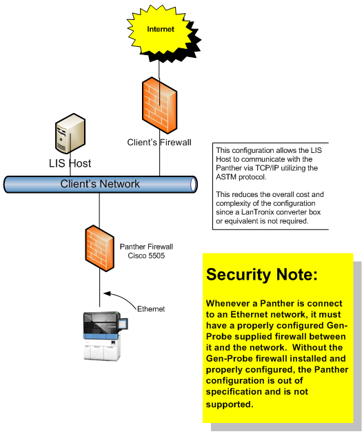
Customer Planning/Site Assessment
- Customer consults with LIS vendor to verify readiness of vendor application to send/receive and process the Panther System assay results.
- For customers connecting to their LIS system using TCP/IP, customer enters LIS connection information on the LIS Configuration portion of the Panther and Panther Fusion Site Assessment document (AW-19118), including the IP address of the LIS server and the TCP port that will be used.
- The information on the site survey is used to determine how to configure the Cisco ASA 5505 adaptive security appliance (firewall) for customers who connect to their LIS systems using TCP/IP. The configuration is performed using the Firewall Wizard software when the firewall is received with the system.
- Program the Firewall with Firewall Wizard v6.0.1.0
Configuration Options
Prior to performing the configuration, determine the following options from the customer or use the defaults:
- Does the customer use uni-directional LIS (only sends results to the LIS system and does not receive orders for tests from the LIS system)? If so, check Enable Unidirectional Mode.
- Does the customer want the system to automatically generate test order queries to the LIS when a rack is loaded? If so, check Enable Automatic Test Order Query.
- Does the customer want to send results automatically? If so, check Automatic Result Sending.
- Does the customer require result verification? If so, ensure Enable Result Verification is checked in Admin > System Configuration > Result Management.
- Does the customer only want to verify certain result types? If so complete the following steps
- Check Enable Automatic Result Holding.
- Click Edit Result Types.
- Select the assay name and click Result Types.
- Click Add and select the result types the customer would like to hold.
- Does the customer want result error flags to be compressed so that multiple flags are sent on one result comment record? If so, check Enable Result Flag Sending In a Compressed Format.
- Does the customer want outgoing query messages to be compressed so that multiple sample IDs are sent on one query record? If so, check Enable Test Order Query in a Compressed Format.
- Does the customer want to activate LIS logging? If so, turn on both LIS logging options (LIS logging is turned off by default).
- Does the customer want to query the Panther System for results? If so, check Enable Host Query Responding.
- Does the customer want results for calibrators or controls? If so, check Enable Calibration Result Sending or Enable Control Result Sending.
- Sign on to Panther System software using the Admin login.
- Select Admin.
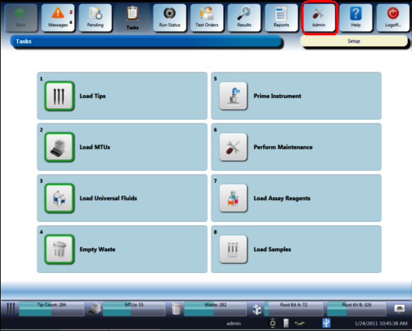
- Select LIS Configuration.
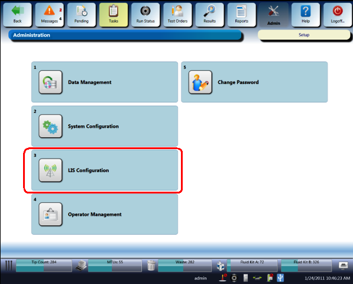
- For TCP/IP Configurations, select TCP/IP for the Interface Layer.
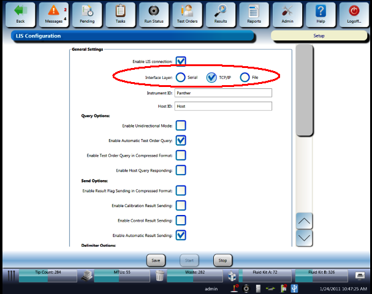
- Confirm that Enable LIS connection is selected.
- Enable the configuration options based on customer preferences recorded during the Site Assessment planning phase.
- Select the IP Address field and enter the customer's LIS Server IP Address. Select the Port field and enter the TCP Port assigned by the LIS Server.
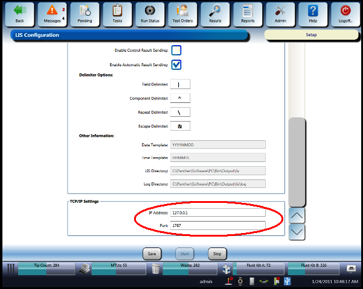
- Select Save.
- Check the Messages screen to confirm that no LIS Error Messages are displayed.
If the customer requires Result Verification, complete the following steps. Otherwise, proceed to TCP/IP Connection LIS Operational Qualification (OQ).
- Select the System Configuration button.
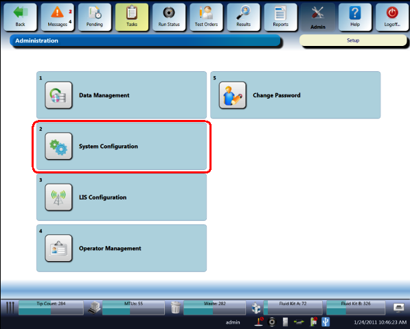
- Select the Results Management drop-down menu.
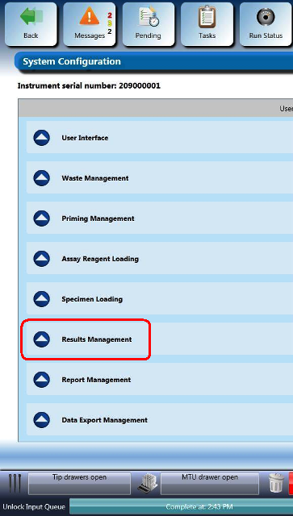
- Click the Enable Result Verification selection.
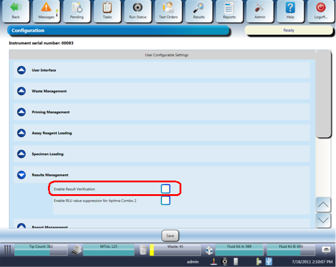
Panther System LIS Operational Qualification (OQ) Procedure
- In the Panther System software, navigate to Admin> LIS Configuration.
- Select Enable ASTM 1381 Logging and Enable ASTM 1394 Logging, and click Save.
- If the Panther System is running SW Ver. 5.0 or higher, complete the following steps:
- Navigate to Tasks > Perform Maintenance > LIS Messages.
- Click the Fetch from LIS button.
The top left of the screen should display LIS Messages—ASTM 1381. If LIS Messages—ASTM 1394 displays, click the Toggle button.
- Verify that an ACK is received from the LIS server.
- After the verification is complete, disable ASTM 1381 and ASTN 1394 logging.
- If the Panther System is running SW version lower than 5.0, complete the following steps:
- Navigate to Tasks > Perform Maintenance > Service, and ope the Dashboard.
The Panther Dashboard software screen appears.

- Select the LIS Monitor tab.
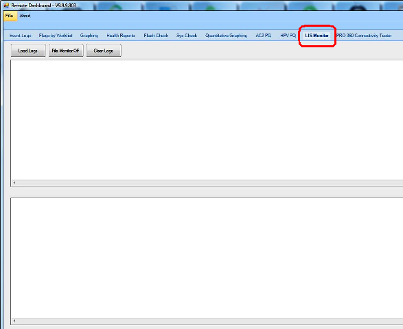
- Select Load Logs.
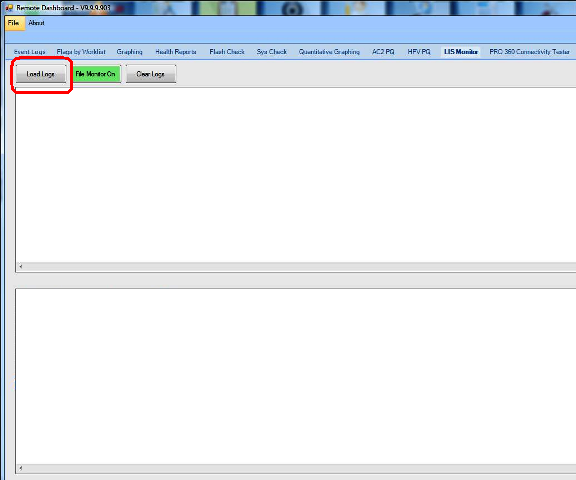
- Select File Monitor On (the button will highlight green).
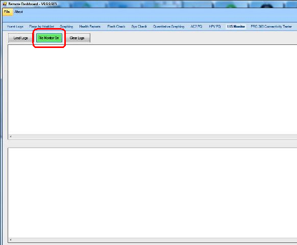
- Log activity appears at the bottom of the screen.
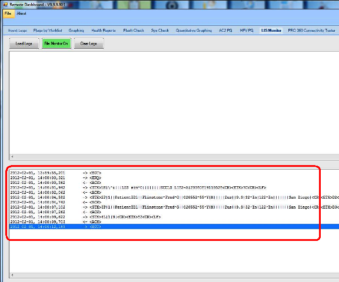
- Verify that an <ACK> was received from the LIS server.
- Close the Panther Dashboard software.
- Disable ASTM 1381 and ASTM 1394 logging.

 button at the top of the page to send feedback, comments, or change requests.
button at the top of the page to send feedback, comments, or change requests.